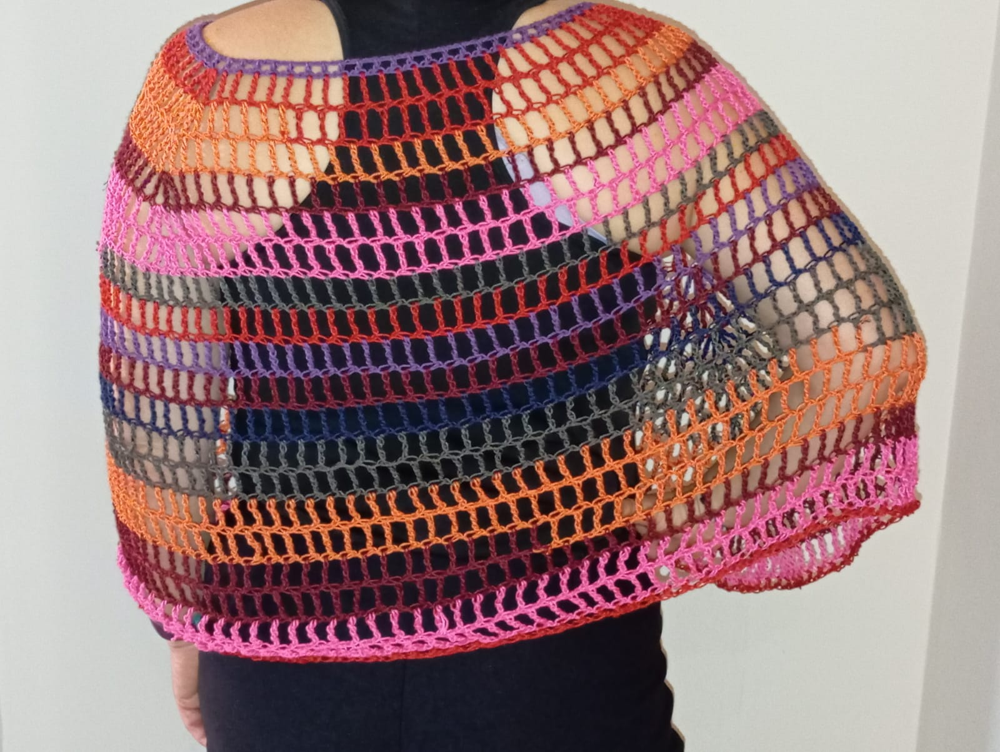
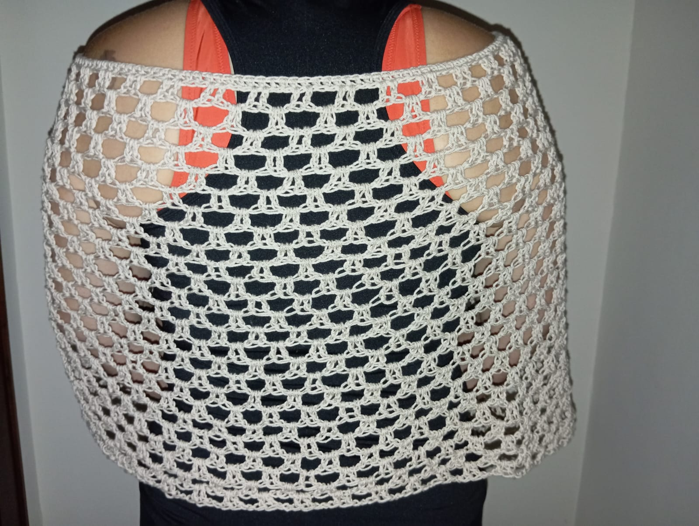
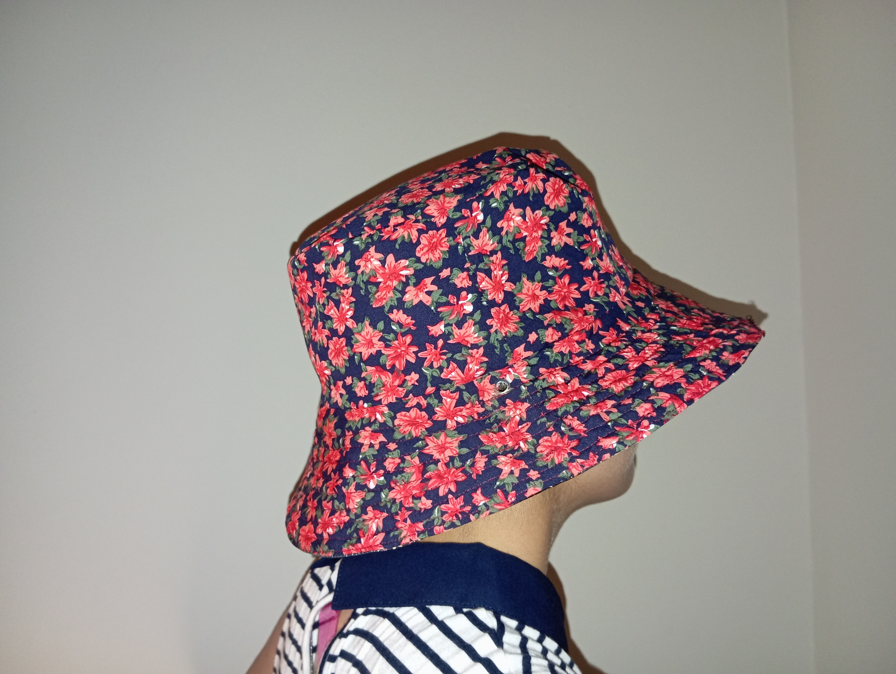

Todos los diseños que se muestran a continuación son únicos, es decir solo disponemos de las prendas que se muestran a continuación. No disponesmos de stock. En caso de estar interesado en alguna prenda envíe un gmail (pie de página) con el asunto "Crochet Nita".
Poncho de verano 1.1

Poncho de medida única multicolo, considerablemente ligero y fácil de conbinar.
35,50€
Poncho blanco de verano

Poncho de medida única blanco, considerablemente ligero y fácil de conbinar.
40€
Gorro de verno

¡VENDIDO!
Gorro pescador reversible, fresco para verano, fácil de combinar.
20€
Esta página web está creada 100% con visual studio code por Nadia